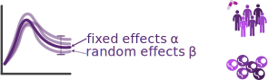

mixed-effects modeling
| dynamical model: | $\dot x = f(x,\theta)$ |
| observables: | $y = h(x, \theta) + \varepsilon$ |
| parameters: | $\theta = A\alpha + B\beta,\quad\beta\sim\mathcal{N}(0,\Sigma)$ |
the problem
- estimate parameters: maximize over $\alpha$ and $\Sigma$ the likelihood of data $y_\text{obs}$, marginalized over random effects $\beta$, $$\pi(y_\text{obs}|\alpha,\Sigma) = \prod_i\int\pi(y_i|\theta)\pi(\theta|\alpha,\Sigma)d\theta$$
- problem: evaluating these (high-dim) integrals is challenging,
especially with many individuals

amortized inference via invertible neural networks
you have to solve many similar problems? amortize the solution!similar to: Radev et al., 2021
- parameter estimation requires repeatedly evaluating an integral $$\pi(y_\text{obs}|\alpha,\Sigma) = \prod_i\int\pi(y_i|\theta)\pi(\theta|\alpha,\Sigma)d\theta$$
our method
- idea: rewrite in terms of an individual-specific posterior: $$\begin{split}\pi(y_\text{obs}|\alpha,\Sigma) &= \prod_i\pi(y_i)\int\pi(\theta|y_i)\frac{\pi(\theta|\alpha,\Sigma)}{\pi(\theta)}d\theta \\&= \prod_i\pi(y_i)\mathbb{E}_{\theta\sim\pi(\theta|y_i)}\left[\frac{\pi(\theta|\alpha,\Sigma)}{\pi(\theta)}\right]\end{split}$$
- ... and approximate the posterior using a neural density estimator trained on synthetic data!
results
- NN fits the posterior well
- after training once ($1-2h$), the optimization is very fast ($s-min$)
- even uncertainty analysis easily possible
- can handle multiple experiment conditions


How to handle missing data in amortized inference?
Problem: BayesFlow cannot interpret the data

Encode missing data

robust for ambiguous fill-in values


 Augment by 0/1 improves performance due to better cost function approximation with individual-specific missingness
Augment by 0/1 improves performance due to better cost function approximation with individual-specific missingness


Can we just impute missing values?


There are no free data
Imputation means that instead of working with available data $x$, we try to reconstruct the full data $\bar
x$,
and estimate parameter probabilities $\pi(\theta|\bar x)$ instead of $\pi(\theta|x)$.
However, the true full data are unknown, therefore we need to take uncertainty in $\bar x$ into account,
considering a full distribution of values $\pi(\bar x|x)$.
We must either make up a distribution (introducing a bias), or use a faithful approximation
$p(\bar x|x) = \pi(\bar x|x)$ where $\pi(\bar x|x)\pi(x) = \pi(\bar x, x)$.
However, if we integrate out over all possible realizations of full data, we obtain
$\int \pi(\theta|\bar x)\pi(\bar x|x)d\bar x = \pi(\theta|x)$ (or similarly $\pi(\theta|x,\tau)$).
TLDR: When doing uncertainty quantification properly, we just recover the same posterior.
Thanks! Questions?
BayesFlow
from: Radev et al, IEEE Transactions on Neural Networks 2020
The problem
- Classical simulation-based inference is case-based + slow + $\varepsilon$-approximate
- What if we want to fit the same model to multiple datasets?
The idea
- Learn a global estimator for the probabilistic mapping $y\mapsto\theta$ via cINNs
- Once trained, amortize inference on arbitrarily many datasets
- Embed data via summary statistics model
Generative models
generate new data instances, $x\sim\pi(X|Y=y)$from: Kingma et al, NeurIPS 2019
e.g.: GANs, VAEs, Flows
Normalizing flows
generative models based on an invertible transformation
Let $z\sim\mathcal{N}(0, I)$ and $f: z\mapsto x$ bijective.
Then via change of variable,s the pdf of $x=f(z)$ is given as
$$p_x(x) = p_z(f^{-1}(x))\cdot|\text{det}(\tfrac{df^{-1}}{dx}(x))|.$$
- in training, transform data points to simple distribution
- trained via negative log-likelihood
- afterwards, generate samples via $f^{-1}(z)$ with $z\sim\mathcal{N}(0,I)$
The problem
- forward model $x_i\sim p(x|\theta) \Leftrightarrow x_i = g(\theta,\xi_i)$ with $\xi_i\sim p(\xi)$
- Bayesian inference $p(\theta|x_{1:N}) \propto p(x_{1:N}|\theta)p(\theta)$
- aim: train an invertible neural network that approximates the true posterior $p_\phi(\theta|x) \approx p(\theta|x)$ $\forall \theta,x$
The method
Goal: Approximate the true posterior $p_\phi(\theta|x) \approx p(\theta|x)$ $\forall \theta,x$.Parameterize $p_\phi$ in terms of a cINN given via a bijective $f_\phi:\mathbb{R}^D\rightarrow\mathbb{R}^D$, $\theta\mapsto z$, which implements a normalizing flow between $\theta$ and a Gaussian latent variable $z$, $$\theta\sim p_\phi(\theta|x) \Leftrightarrow \phi = f^{-1}_\phi(z; x)\quad\text{with}\quad z\sim\mathcal{N}_D(z|0,I).$$
Seek neural network parameters $\hat\phi$ that minimize the KL divergence between true and approximate posterior $\forall x$, giving the objective ...
The method
\begin{equation*} \begin{split} \hat\phi &= \arg\min_\phi\mathbb{E}_{p(x)}[\text{KL}(p(\theta|x)\!\mid\mid\! p_\phi(\theta|x))]\\ &= \arg\max_\phi\iint p(x,\theta)\log p_\phi(\theta|x)dxd\theta\\ &= \arg\max_\phi\iint p(x,\theta)(\log p(f_\phi(\theta;x)) + \log |\det J_{f_\phi}|)dxd\theta \end{split} \end{equation*} Approximate via Monte-Carlo sample: \begin{equation*} \begin{split} \hat\phi &= \arg\min_\phi\frac 1 M\sum_{m=1}^M(-\log p(f_\phi(\theta^{(m)};x^{(m)})) - \log |\det J_{f_\phi}^{(m)}|\\ &= \arg\min_\phi\frac 1 M\sum_{m=1}^M\left(\frac{|f_\phi(\theta^{(m)};x^{(m)})|_2^2}{2} - \log |\det J_{f_\phi}^{(m)}|\right) \end{split} \end{equation*}Summary statistics learning
If data $x_{1:N}$ are high-dimensional: Jointly learn a summary network $\tilde x = h_\psi(x_{1:N})$, giving the objective $$ \hat\phi,\hat\psi = \arg\max_{\phi,\psi)}\mathbb{E}_{p(x,\theta,N)}[\log p_\phi(\theta|h_\psi(x_{1:N})] $$ with Monte-Carlo estimate $$ \hat\phi,\hat\psi = \arg\min_{\phi,\psi}\frac 1 M \sum_{m=1}^M\left(\frac{|f_\phi(\theta^{(m)};h_\psi(x_{1:N}^{(m)})|_2^2}{2} - \log|\det(J_{f_\phi}^{(m)})|\right) $$
Learning phase:
Inference phase:
- create plenty of synthetic data $(y_i,\theta_i)\sim\pi(y,\theta)$
- train a cINN in forward mode
Inference phase:
- sample many latent $z_i\sim\pi(z)$
- run cINN backwards, $\theta_i = g(z_i; y_\text{obs}) \sim \pi(\theta|y_\text{obs})$
- fast + accurate amortized Bayesian inference